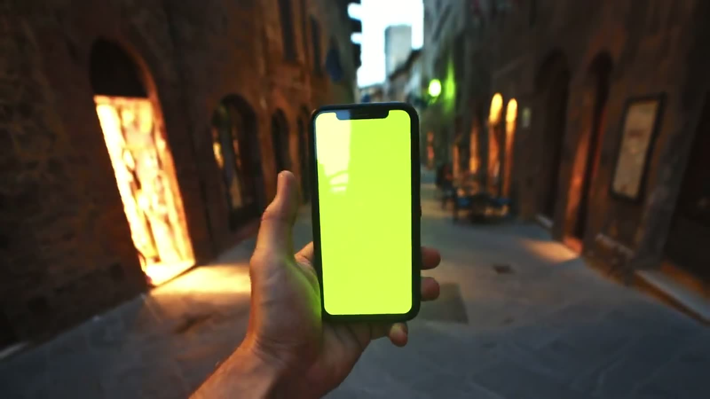

Every course. Every level.
Three tracks, one CEFR ladder. Start with the structured course, add a spoken track, deepen with a cultural capsule.
Il Corso
The full CEFR arc from A0 to A2.2 in four courses. Grammar, vocabulary, listening, reading and writing, each unit set in a real Italian city.

CI Principiante
Your first Italian, taught in Rome, the city where the language began.

CI Elementare
Everyday Italian from Florence, the city where the language was standardised.

CI Intermedio
Confident daily Italian from Bologna, la Dotta, la Grassa, la Rossa.

CI Avanzato
Real Italian for real life, between the warmth of Naples and the sharpness of Milan.
Parliamo
Conversation-first sessions on four Italian scenes. For learners who want fluency and confidence, from A0 to B1.

Al Caffè
Twenty live conversation sessions set at Italian cafés.

A Tavola
Twenty live conversation sessions set at the Italian table.

In Viaggio
Twenty live conversation sessions for people who actually travel Italy, trains, hotels, museums, mountain refuges, sailing the Amalfi coast..

Chiacchierando
Twenty live conversation sessions on the four things Italians actually do all day: opinion, humour, disagreement and storytelling.
Capsule culturali
Six sessions on a single cultural world: the table, the Renaissance, the opera. Open to any level.

La Cucina
Six live cultural sessions on the vocabulary and history of the Italian table, pasta, pane, vino, caffè, and the sacred rituals of the family meal..

L'Arte
Six live cultural sessions on the Italian language of art history, from Giotto to Caravaggio, with the vocabulary that lets you read a museum wall label in the Uffizi..

L'Opera
Six live cultural sessions on Verdi, Puccini and Rossini.
Compare the catalog.
| Code | Course | CEFR | Format | Faculty | Syllabus |
|---|---|---|---|---|---|
| CI · 01 | CI Principiante | A0 to A1.1 | 20 lessons of 85 min | Marco Rinaldi, Roma | |
| CI · 02 | CI Elementare | A1.1 to A1.2 | 20 lessons of 85 min | Chiara Bellini, Firenze | |
| CI · 03 | CI Intermedio | A1.2 to A2.1 | 20 lessons of 85 min | Giulia Moretti, Bologna | |
| CI · 04 | CI Avanzato | A2.1 to A2.2 | 20 lessons of 85 min | Luca De Simone, Napoli | |
| PS · 01 | Al Caffè | Spoken A0 to A1 | 20 sessions of 85 min | Marco Rinaldi, Roma | |
| PS · 02 | A Tavola | Spoken A1 to A2 | 20 sessions of 85 min | Chiara Bellini, Firenze | |
| PS · 03 | In Viaggio | Spoken A2 | 20 sessions of 85 min | Francesca Zeno, Venezia | |
| PS · 04 | Chiacchierando | Spoken A2 to B1 | 20 sessions of 85 min | Alessandro Ferri, Milano | |
| CAP · 01 | La Cucina | Cultural, any level | 6 sessions of 60 min | Giulia Moretti, Bologna | |
| CAP · 02 | L'Arte | Cultural, any level | 6 sessions of 60 min | Chiara Bellini, Firenze | |
| CAP · 03 | L'Opera | Cultural, any level | 6 sessions of 60 min | Alessandro Ferri, Milano |
Lesson lengths follow the published syllabi. Start dates and tuition are for the Autumn 2026 cohorts.
Not sure where to start?
A placement conversation with a teacher puts you on the right rung of the ladder.